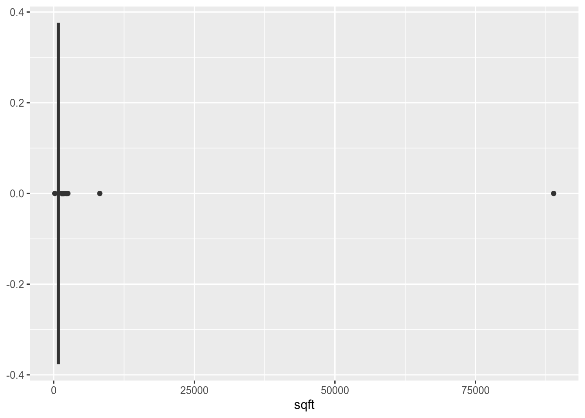
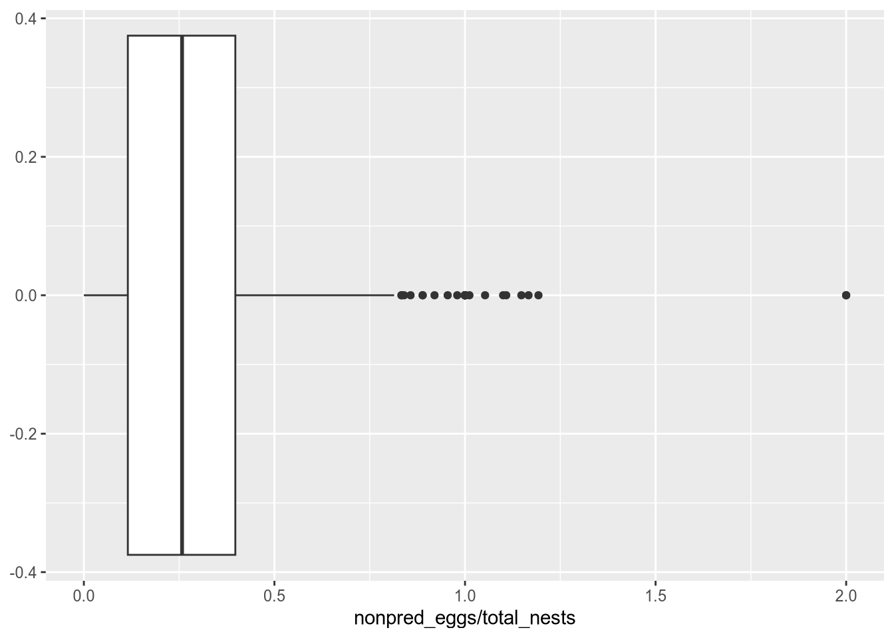

This lesson covers a variety of ways to investigate and summarize tabular data in order to understand the data better and identify potential problems. The lesson also describes how to fix some of the most common data problems.
NoteLearning Goals
After this lesson, you should be able to:
Convert columns to appropriate data types
Locate and count missing values in a data set
Explain what it means for a value to be an “outlier”
Locate and count outliers in a data set
Explain the location statistics mean, median, and mode
Explain the scale statistics range and standard deviation
ImportantRequired Packages
This chapter uses the following packages:
ggplot2
Chapter 14 explains how to install and load packages.
16.1 Structural Summaries
Whenever you load a data set into R, your next step should be to investigate the data’s structure. This step is important because it can help you identify whether:
The data was loaded correctly
There are structural problems with the data that will make it difficult to use if they aren’t fixed
Section 12.9 demonstrated several functions for getting structural summaries of data. Some of these are:
str to get a detailed structural summary
head, tail to preview the data
nrow, ncol, dim, length to get dimension information
names, colnames, rownames to get element names
class, typeof to get classes and types
That section gave examples with the California Least Terns dataset (Section 11.4). For instance, the str function shows the classes of the columns:
str(terns)
'data.frame': 791 obs. of 43 variables:
$ year : int 2000 2000 2000 2000 2000 2000 2000 2000 2000 2000 ...
$ site_name : chr "PITTSBURG POWER PLANT" "ALBANY CENTRAL AVE" "ALAMEDA POINT" "KETTLEMAN CITY" ...
$ site_name_2013_2018: chr "Pittsburg Power Plant" "NA_NO POLYGON" "Alameda Point" "Kettleman" ...
$ site_name_1988_2001: chr "NA_2013_2018 POLYGON" "Albany Central Avenue" "NA_2013_2018 POLYGON" "NA_2013_2018 POLYGON" ...
$ site_abbr : chr "PITT_POWER" "AL_CENTAVE" "ALAM_PT" "KET_CTY" ...
$ region_3 : chr "S.F._BAY" "S.F._BAY" "S.F._BAY" "KINGS" ...
$ region_4 : chr "S.F._BAY" "S.F._BAY" "S.F._BAY" "KINGS" ...
$ event : chr "LA_NINA" "LA_NINA" "LA_NINA" "LA_NINA" ...
$ bp_min : num 15 6 282 2 4 9 30 21 73 166 ...
$ bp_max : num 15 12 301 3 5 9 32 21 73 167 ...
$ fl_min : int 16 1 200 1 4 17 11 9 60 64 ...
$ fl_max : int 18 1 230 2 4 17 11 9 65 64 ...
$ total_nests : int 15 20 312 3 5 9 32 22 73 252 ...
$ nonpred_eggs : int 3 NA 124 NA 2 0 NA 4 2 NA ...
$ nonpred_chicks : int 0 NA 81 3 0 1 27 3 0 NA ...
$ nonpred_fl : int 0 NA 2 1 0 0 0 NA 0 NA ...
$ nonpred_ad : int 0 NA 1 6 0 0 0 NA 0 NA ...
$ pred_control : chr "" "" "" "" ...
$ pred_eggs : int 4 NA 17 NA 0 NA 0 NA NA NA ...
$ pred_chicks : int 2 NA 0 NA 4 NA 3 NA NA NA ...
$ pred_fl : int 0 NA 0 NA 0 NA 0 NA NA NA ...
$ pred_ad : int 0 NA 0 NA 0 NA 0 NA NA NA ...
$ pred_pefa : chr "N" "" "N" "" ...
$ pred_coy_fox : chr "N" "" "N" "" ...
$ pred_meso : chr "N" "" "N" "" ...
$ pred_owlspp : chr "N" "" "N" "" ...
$ pred_corvid : chr "Y" "" "N" "" ...
$ pred_other_raptor : chr "Y" "" "Y" "" ...
$ pred_other_avian : chr "N" "" "Y" "" ...
$ pred_misc : chr "N" "" "N" "" ...
$ total_pefa : int 0 NA 0 NA 0 NA 0 NA NA NA ...
$ total_coy_fox : int 0 NA 0 NA 0 NA 0 NA NA NA ...
$ total_meso : int 0 NA 0 NA 0 NA 0 NA NA NA ...
$ total_owlspp : int 0 NA 0 NA 0 NA 0 NA NA NA ...
$ total_corvid : int 4 NA 0 NA 0 NA 0 NA NA NA ...
$ total_other_raptor : int 2 NA 6 NA 0 NA 3 NA NA NA ...
$ total_other_avian : int 0 NA 11 NA 4 NA 0 NA NA NA ...
$ total_misc : int 0 NA 0 NA 0 NA 0 NA NA NA ...
$ first_observed : chr "2000-05-11" "" "2000-05-01" "2000-06-10" ...
$ last_observed : chr "2000-08-05" "" "2000-08-19" "2000-09-24" ...
$ first_nest : chr "2000-05-26" "" "2000-05-16" "2000-06-17" ...
$ first_chick : chr "2000-06-18" "" "2000-06-07" "2000-07-22" ...
$ first_fledge : chr "2000-07-08" "" "2000-06-30" "2000-08-06" ...
Often when you load a new dataset, some of the columns won’t have the correct data type (or class) for what you want to do. For instance, in the least terns dataset, the site_name, region_3, and event columns all contain categorical data, so they should be factors.
You can convert these columns to factors with the factor function from Section 13.2.4:
We’ll learn more about the lapply function in Section 17.1.
You can use whichever approach is more convenient and makes more sense to you. If there were other columns to convert, we’d go through the same steps with the appropriate conversion function.
R provides as. functions to convert to the most common data types. For instance, as.character converts an object to a string:
x =3.1class(x)
[1] "numeric"
y =as.character(x)y
[1] "3.1"
class(y)
[1] "character"
The read.csv function does a good job at identifying columns of numbers, so it’s rarely necessary to convert columns of numbers manually. However, you may have to do this for data you got some other way (rather than loading a file). For instance, it’s common to make these conversions when scraping data from the web.
It’s also a good idea to convert categorical columns into factors with the factor function, and to convert columns of dates into dates (more about this in Chapter 20).
16.2 Statistical Summaries
After investigating the data’s structure, it’s a good idea to check some basic statistical properties. This step is important because it can help you identify limitations of and patterns in the data.
Which statistics are appropriate for a given feature often depends on the type of the feature. Recall from Section 13.2 that the types statisticians typically think about are:
Categorical
Nominal - data separated into specific categories, with no order. For example, hair color (red, brown, blonde, …) is categorical.
Ordinal - data separated into specific categories, with an order. For example, school level (elementary, middle, high, college) is ordinal.
Numerical
Discrete - integers, or a finite set of decimal numbers with no values in between. Sometimes discrete values can also be treated as ordinal. For example, month as a number (1, 2, …, 12) is discrete.
Continuous - decimal numbers. There are no specific categories, but there is an order. For example, height in inches is numerical.
The table function, which was introduced in Section 12.9, is great for summarizing categorical (and sometimes discrete) data. For example:
How spread out is it? This is the scale of the data.
Let’s use the data
x =c(-2, -1, -1, -1, 0, 2, 6)
as an example.
Location is generally summarized with a number near the middle or center of the data. A few options are:
Mode - the value that appears most frequently. The mode can be calculated for any kind of data, but doesn’t work well for continuous data.
For our example, the mode of x is -1. You can compute the mode with table:
table(x)
x
-2 -1 0 2 6
1 3 1 1 1
Median - sort the data, then find the value in the middle. The median can be calculated for ordinal or numerical data.
For our example, the median is -1. Compute this with median:
median(x)
[1] -1
Mean - the balancing point of the data, if a waiter was trying to balance the data on a tray. The mean can only be calculated for numerical data.
For our example the mean is 0.4285. Compute this with mean:
mean(x)
[1] 0.4285714
Adding large values to the data affects the mean more than the median:
y =c(x, 100)mean(y)
[1] 12.875
median(y)
[1] -0.5
Because of this, we say that the median is robust.
The mean is good for getting a general idea of where the center of the data is, while comparing it with the median reveals whether there are any unusually large or small values.
Scale is generally summarized by a number that says how far the data is from the center (mean, median, etc…). Two options are:
Standard Deviation - square root of the average squared distance to the mean (the distance from a point to a mean is called a deviation). You can think of this as approximately the average distance from a data point to the mean. As a rule of thumb, most of the data will be within 3 standard deviations of the mean.
You can compute the standard deviation with sd:
sd(x)
[1] 2.760262
Interquartile Range (IQR) - difference between the 75th and 25th percentile. The median is the 50th percentile of the data; it’s at the middle of the sorted data. We can also consider other percentiles. For instance, the 25th percentile is the value one-quarter of the way through the sorted data.
Quantile is another word for percentile. Quartile specifically refers to the 25th, 50th, and 75th percentiles because they separate the data into four parts (hence “quart-”).
You can compute quantiles with quantile, or compute the IQR directly with IQR:
quantile(x)
0% 25% 50% 75% 100%
-2 -1 -1 1 6
# IQRIQR(x)
[1] 2
The IQR is more robust than the standard deviation.
Many of the functions for computing statistical summaries have a parameter na.rm to ignore missing values. Setting na.rm = TRUE is often useful when you’re just trying to do an initial investigation of the data. However, in a more complete analysis, you should think carefully about what the missing values mean, whether they follow any patterns, and whether there are enough non-missing values for statistical summaries to be good representatives of the data.
Finally, the summary function computes a detailed statistical summary of an R object. For data frames, the function computes a summary of each column, guessing an appropriate statistic based on the column’s data type.
16.3 Missing Values
If your data contains missing values, it’s important to think about why the values are missing. Statisticians use two different terms to describe why data is missing:
missing at random (MAR)
missing not at random (MNAR) - causes bias!
When values are missing at random, the cause for missingness is one or more features in the data set. For example, if a soil moisture sensor overheats and doesn’t work on hot days, but air temperature is recorded in the data set, values are missing at random.
When values are missing not at random, the cause for missingness is one or more features not in the data set. Think of this as a form of censorship. For example, if people in a food survey refuse to report how much sugar they ate on days where they ate junk food, values are missing not at random. Values MNAR can bias an analysis.
Note
Technically, there’s a third kind of missing data: missing completely at random (MCAR). When values are missing completely at random, the cause for missingness is completely unrelated to the research question and features of interest. This kind of missing data is rare in practice and impossible to identify from the data alone. Values MCAR can be ignored without causing any bias.
The default way to handle missing values in R is to ignore them. This is just a default, not necessarily the best or even an appropriate way to deal with them. You can remove missing values from a data set by indexing:
year site_name
1 2000 PITTSBURG POWER PLANT
3 2000 ALAMEDA POINT
5 2000 OCEANO DUNES STATE VEHICULAR RECREATION AREA
6 2000 RANCHO GUADALUPE DUNES PRESERVE
8 2000 SANTA CLARA RIVER MCGRATH STATE BEACH
9 2000 ORMOND BEACH
site_name_2013_2018 site_name_1988_2001
1 Pittsburg Power Plant NA_2013_2018 POLYGON
3 Alameda Point NA_2013_2018 POLYGON
5 Oceano Dunes State Vehicular Recreation Area NA_2013_2018 POLYGON
6 Rancho Guadalupe Dunes Preserve NA_2013_2018 POLYGON
8 Santa Clara River NA_2013_2018 POLYGON
9 Ormond Beach NA_2013_2018 POLYGON
site_abbr region_3 region_4 event bp_min bp_max fl_min fl_max
1 PITT_POWER S.F._BAY S.F._BAY LA_NINA 15 15 16 18
3 ALAM_PT S.F._BAY S.F._BAY LA_NINA 282 301 200 230
5 OCEANO_DUNES CENTRAL CENTRAL LA_NINA 4 5 4 4
6 RGDP CENTRAL CENTRAL LA_NINA 9 9 17 17
8 S_CLAR_MCG SOUTHERN VENTURA LA_NINA 21 21 9 9
9 ORMOND SOUTHERN VENTURA LA_NINA 73 73 60 65
total_nests nonpred_eggs nonpred_chicks nonpred_fl nonpred_ad pred_control
1 15 3 0 0 0
3 312 124 81 2 1
5 5 2 0 0 0
6 9 0 1 0 0
8 22 4 3 NA NA
9 73 2 0 0 0
pred_eggs pred_chicks pred_fl pred_ad pred_pefa pred_coy_fox pred_meso
1 4 2 0 0 N N N
3 17 0 0 0 N N N
5 0 4 0 0 N N N
6 NA NA NA NA
8 NA NA NA NA
9 NA NA NA NA N N Y
pred_owlspp pred_corvid pred_other_raptor pred_other_avian pred_misc
1 N Y Y N N
3 N N Y Y N
5 N N N Y N
6
8
9 N N Y N N
total_pefa total_coy_fox total_meso total_owlspp total_corvid
1 0 0 0 0 4
3 0 0 0 0 0
5 0 0 0 0 0
6 NA NA NA NA NA
8 NA NA NA NA NA
9 NA NA NA NA NA
total_other_raptor total_other_avian total_misc first_observed last_observed
1 2 0 0 2000-05-11 2000-08-05
3 6 11 0 2000-05-01 2000-08-19
5 0 4 0 2000-05-04 2000-08-30
6 NA NA NA 2000-05-07 2000-08-13
8 NA NA NA 2000-06-06 2000-09-05
9 NA NA NA
first_nest first_chick first_fledge
1 2000-05-26 2000-06-18 2000-07-08
3 2000-05-16 2000-06-07 2000-06-30
5 2000-05-28 2000-06-20 2000-07-13
6 2000-05-31 2000-06-22 2000-07-20
8 2000-06-06 2000-06-28 2000-07-24
9 2000-06-08 2000-06-26 2000-07-17
The na.omit function is less precise than indexing, because it removes rows that have a missing value in any column. This means lots of information gets lost.
Another way to handle missing values is to impute, or fill in, the values with estimates based on other data in the data set. We won’t get into the details of how to impute missing values here, since it is a fairly deep subject. Generally it is safe to impute MAR values, but not MNAR values.
16.4 Outliers
An outlier is an anomalous or extreme value in a data set. We can picture this as a value that’s far away from most of the other values. Sometimes outliers are a natural part of the data set. In other situations, outliers can indicate errors in how the data were measured, recorded, or cleaned.
There’s no specific definition for “extreme” or “far away”. A good starting point for detecting outliers is to make a plot that shows how the values are distributed. Box plots and density plots work especially well for this (you’ll learn about how to make plots in a later lesson):
Warning: Removed 164 rows containing non-finite outside the scale range
(`stat_boxplot()`).

# Some sites might have more eggs than others, so a high number of non-predator# egg mortalities does not necessarily mean a site is unusually dangerous. We# can find dangerous sites by looking at non-predator egg mortalities per nest:ggplot(terns, aes(x = nonpred_eggs / total_nests)) +geom_boxplot()
Warning: Removed 206 rows containing non-finite outside the scale range
(`stat_boxplot()`).

Statisticians tend to use the rule of thumb that any value more than 3 standard deviations away from the mean is an outlier. You can use the scale function to compute how many standard deviations the elements in a column are from their mean:
z =scale(terns$nonpred_eggs)head(z)
[,1]
[1,] -0.5403550
[2,] NA
[3,] 0.6008708
[4,] NA
[5,] -0.5497867
[6,] -0.5686499
Be careful to think about what your specific data set measures, as this definition isn’t appropriate in every situation.
How can you handle outliers? First, try inspecting other features from the row to determine whether the outlier is a valid measurement or an error. When an outlier is valid, keep it.
If the outlier interferes with a plot you want to make, you can adjust the x and y limits on plots as needed to “ignore” the outlier. Make sure to mention this in the plot’s title or caption.
When an outlier is not valid, first try to correct it. For example:
Correct with a different covariate from the same observation.
Estimate with a mean or median of similar observations. This is another example of imputing values.
If other features don’t help with correction, try getting information from external sources. If you can’t correct the outlier but know it’s invalid, replace it with a missing value NA.